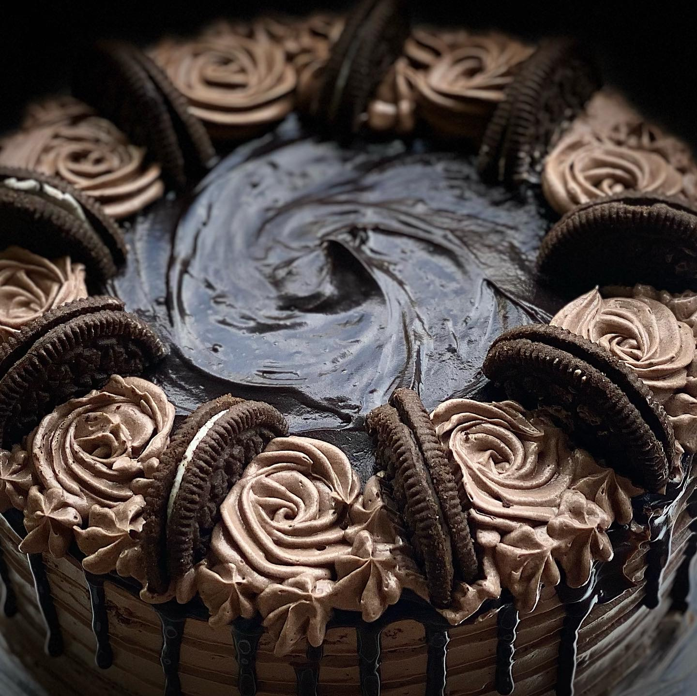
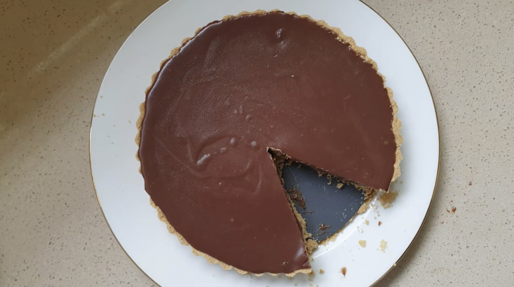

My recipes
Here is my latest recipe!

Crispy Corn
for boiling
4 cup water
1 tsp salt
2 cup sweet corn
for frying:
¼ cup corn flour
¼ cup rice flour
1 tbsp maida / plain flour
¼ tsp pepper powder
¼ tsp salt
oil (for frying)
for masala:
½ tsp kashmiri red chilli powder
¼ tsp cumin powder
½ tsp aamchur
¼ tsp salt
2 tbsp onion (finely chopped)
2 tbsp capsicum (finely chopped)
2 tbsp coriander (finely chopped)
Method
1. firstly, in a large vessel boil 4 cup water and 1 tsp salt.
2. add 2 cup sweet corn and boil for a minute.
3. drain off the sweet corn to remove excess water.
4. now add ¼ cup cornflour, ¼ cup rice flour, 1 tbsp maida, ¼ tsp pepper powder and ¼ tsp salt.
5. mix well making sure the flour is coated well to sweet corn.
6. sieve the mixture to remove excess flour.
7. deep fry in hot oil making sure to keep the flame on medium.
8. stir occasionally, and fry on medium flame until it turns golden brown.
9. drain off over kitchen paper to remove excess oil.
10. transfer the fried corn into a large bowl.
11. add ½ tsp chilli powder, ¼ tsp cumin powder, ½ tsp aamchur and ¼ tsp salt.
12. mix well making sure the spices are well combined.
13. also add 2 tbsp onion, 2 tbsp capsicum and 2 tbsp coriander.
14. mix well-combining everything well.
15. finally, enjoy crispy corn recipe with tomato sauce.

Cake

tart
==